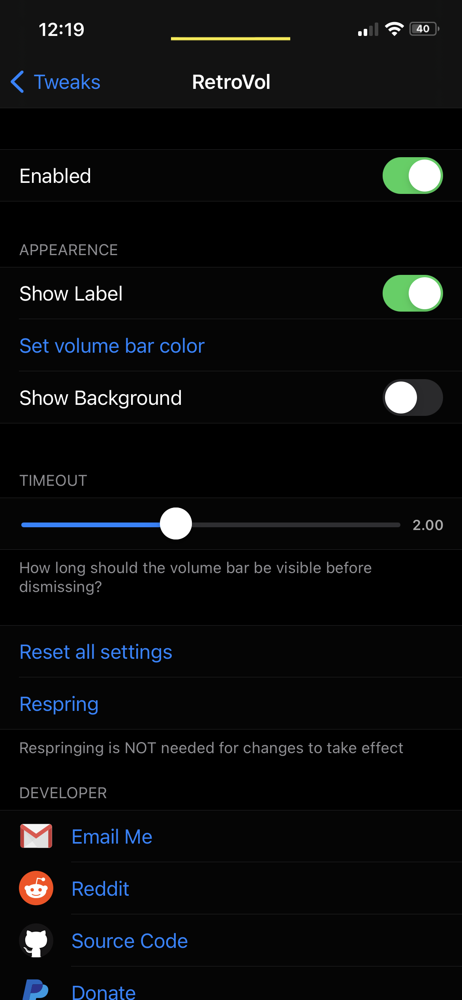
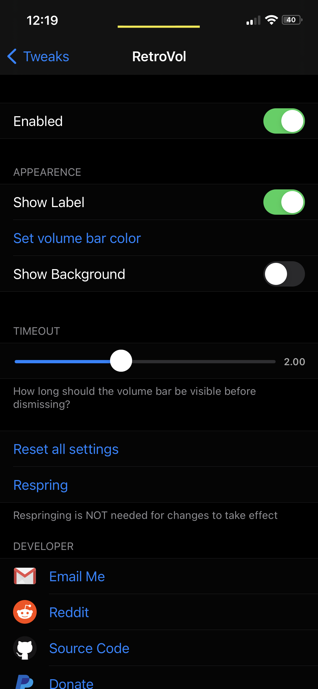
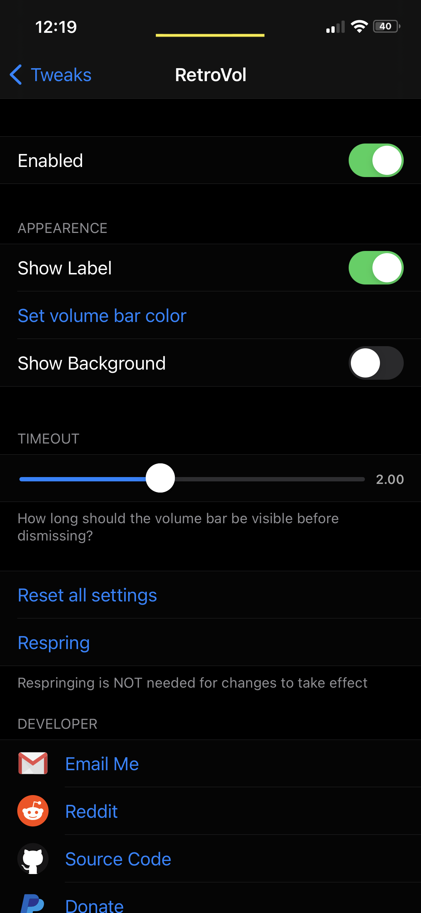
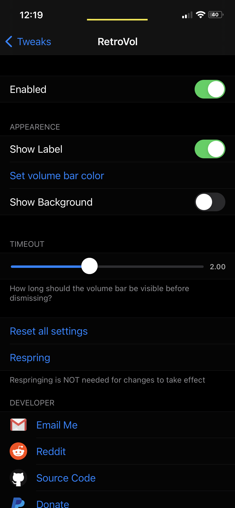
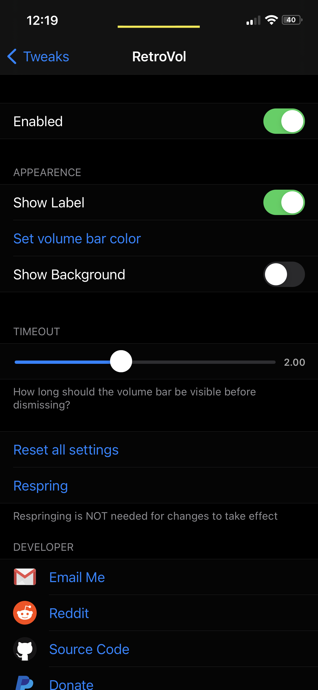

Compatibility
Made for iOS 14
Description
This tweak is under development and may or may not have proper functionality. Install at your own risk.
screenshots

changelog
1.0.0 (Not yet)
- Initial Release
Source Code
 
